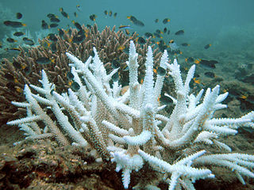

Los diseños de muestreo o experimentales con más de un factor nos brindan la oportunidad de probar si los factores interactúan. Una interacción entre factores ocurre cuando el efecto de un factor depende de las condiciones en el otro factor. Si no hay interacción, entonces los dos factores actúan de manera independiente. Al aprender estadística, las interacciones complican un poco nuestras vidas porque no podemos hacer afirmaciones simples sobre los efectos principales (cada factor de manera aislada): los resultados observados son debido a la combinación de factores. Sin embargo, es muy importante comprender esto, ya que a menudo nos interesa saber si varias variables ambientales actúan conjuntamente de manera independiente. Considera alguna de las siguientes preguntas:
¿Varía el efecto de eliminar depredadores entre hábitats?
¿Varía el efecto de la contaminación con la temperatura del agua?
¿Varía el efecto de la temperatura con el suministro de alimento?
¿Varía el efecto de la contaminación de nutrientes en diferentes tipos de suelo?
¿Varían los beneficios de establecer una reserva según el tamaño de la reserva?
Todas estas son preguntas que se responderían mediante una prueba estadística formal de la interacción entre factores.

La comprensión de las interacciones se puede entender mejor visualmente. Consideremos cómo el crecimiento de los corales puede verse afectado por dos factores de estrés muy importantes que actualmente afectan los océanos del mundo: el aumento de la temperatura y la acidificación. Un diseño experimental para probar esto podría ser aquel que cultiva corales en el laboratorio en todas las combinaciones posibles de varias temperaturas y varias condiciones de pH.
Para simplificar, consideremos solo dos niveles de cada tratamiento: un tratamiento de control y un tratamiento de calentamiento para la temperatura, y un tratamiento de control y un tratamiento acidificado para el pH. Los corales se cultivarían en las cuatro combinaciones. Estas tres gráficas de crecimiento de corales ilustran escenarios en los que los dos factores de temperatura y pH no interactúan.
Los siguientes tres gráficos de crecimiento de coral ilustran escenarios en los que hay una interacción entre los factores de temperatura y pH.

En todos estos casos con interacciones, debes tener en cuenta que las líneas no son paralelas (comparar con las primeras tres figuras anteriores).
Las mismas ideas se aplican a diseños de muestreo o experimentales con más de dos niveles para cada factor, y para diseños en los que las variables predictoras son continuas en lugar de categóricas.
En esta figura, hay un efecto del pH (disminución del crecimiento en el tratamiento ácido) en los tratamientos de temperatura cálida y caliente, pero no en el tratamiento de temperatura de control. El crecimiento del coral siempre se redujo en el tratamiento caliente, pero en el tratamiento cálido, el crecimiento se desaceleró en comparación con el control solo en el tratamiento ácido.
Escrita. Si tienes una interacción significativa entre dos factores en tu diseño, la comunicación de tus resultados requiere un texto que describa cómo los efectos de un factor dependen del otro. En los ejemplos con interacciones mencionados anteriormente, no puedes simplemente decir que “la acidificación del océano redujo el crecimiento de los corales” porque este resultado varió en función de los tratamientos de temperatura.
En diseños con factores categóricos, los tests post hoc se utilizan comúnmente para probar cuáles medias difieren entre sí (es decir, comparar todas las cuatro combinaciones de temperatura y pH en el diseño mencionado anteriormente). Los resultados de estos tests se pueden incluir en el texto o en las figuras para mostrar cuáles medias difieren entre sí. Luego tendrías soporte estadístico para afirmaciones que contrasten tratamientos particulares. Una frase para la sección de resultados en la figura superior izquierda de los gráficos de interacciones mencionados anteriormente podría ser algo como “La temperatura interactuó con el pH para afectar el crecimiento de los corales (Tabla 1), con un crecimiento reducido solo en el tratamiento cálido (Fig. 1)”, donde la Tabla 1 contendría los detalles estadísticos de la prueba realizada (por ejemplo, ANOVA factorial).
Autor: Alistair Poore
Año: 2016
Última actualización: Jun. 2023